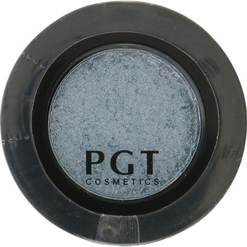

返回列表
产品名称：パルガントン スパークリングアイシャドウ 175 ブルー

＿ パルガントン スパークリングアイシャドウ 175 ブルー ２Ｇ
メーカー ＿
JANコード 8809363873410
商品の特徴
目元をグラマラスに彩る美しい発色ときらめきです。
- 成分・分量
- ＜成分＞
ホウケイ酸（Ca／Al）、ホウケイ酸（Ca／Na）、マイカ、タルク、酸化チタン、ジエチルヘキサン酸ネオペンチルグリコール、フェニルトリメチコン、ナイロン-12、ステアロイルオキシステアリン酸オクチルドデシル、ポリプロピレン、リンゴ酸ジイソステアリル、ヘキサ（ヒドロキシステアリン酸／ステアリン酸／ロジン酸）ジペンタエリスリチル、ネオペンタン酸イソステアリル、ミリスチン酸Mg、ツバキ油、ステアリン酸Mg、ポリブテン、プロパンジオール、ポリテトラフルオロエチレン、シリカ、ジメチコン、水添レシチン、トリエトキシカプリリルシラン、酢酸トコフェロール、酸化スズ、デヒドロ酢酸Na、グンジョウ、コンジョウ、Al
- 用法及び用量
- 指などに適量をとり、やさしく瞼にのせてください。